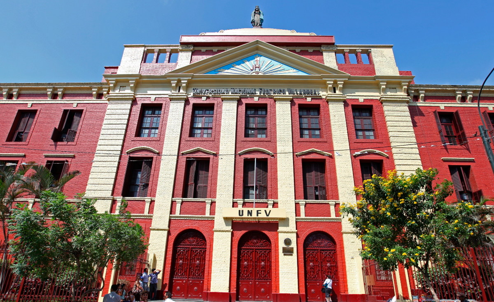
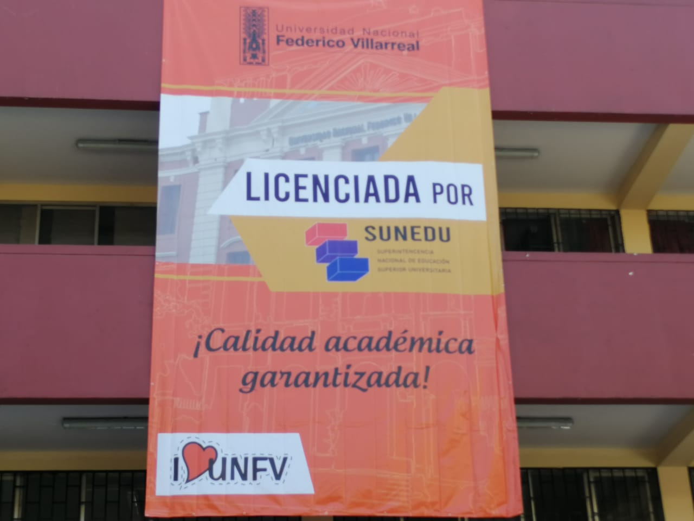

Sobre Nosotros
La Universidad Nacional Federico Villarreal – UNFV es una universidad pública peruana fundada en 1963. Actualmente cuenta con 18 facultades y 57 escuelas. Además, en noviembre de 2021 obtuvo el puesto número 5 entre las mejores universidades públicas del país del ranking Scopus, gracias a sus avances en materia de investigación social, humanística y científica. Esta universidad ofrece un total de 55 carreras. Es una excelente opción institucional para aquellos que buscan una amplia oferta académica en una de las mejores universidades del país.

Misión
Somos una comunidad académica orientada a la investigación y a la docencia, que brinda formación profesional humanística, científica y tecnológica, a los estudiantes; con responsabilidad social, innovación competitividad emprendimiento, para contribuir al desarrollo y la sostenibilidad sistémica del país.

Visión
Comunidad académica posicionada entre las mejores universidades en el ámbito nacional e internacional a través de la calidad, producción y difusión intelectual e innovación con responsabilidad social.